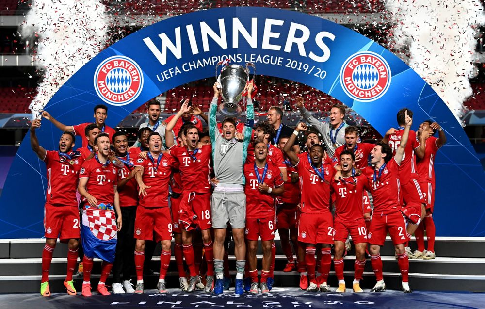

BAYERN'S HISTORY
유럽 최고의 클럽이 되기까지
UEFA 3대 메이저 대회 우승, 트레블, 유러피언컵 3연패를 모두 달성한 클럽,
6관왕과 2회의 트레블을 기록한 클럽,
그리고 UEFA 챔피언스리그 역사상 유일무이한 전승 우승을 달성한 클럽.

🏆 바이에른 뮌헨의 우승 타이틀 🏆
독일 분데스리가 : 31
DFB 포칼 : 20
독일 슈퍼컵 : 9
리그 컵 : 6
UEFA 챔피언스리그 : 6
UEFA CUP : 1
UEFA Winner's CUP : 1
인터콘티넨탈 컵 : 2
FIFA 클럽 월드컵 : 2
UEFA 슈퍼컵 : 2
🔎 BAYERN'S PROFILE 🔍
○ 정식 명칭 : Fußball-Club Bayern München e. V.
○ 애칭 : Der FCB / Die Bayern / Stern des Südens (남쪽의 별) / Bayern / Rekordmeister (기록 챔피언) / Deutschermeister (독일 챔피언)
○ 창단일 : 1900.02.27
○ 연고지 : München, Oberbayern, Bayern
○ 라이벌 : TSV 1860 Munchen - 뮌헨 더비 / 1. FC Nürnberg - 바이에른 더비 / VfB Stuttgart - 남독일 더비
○ 슬로건 : MIA SAN MIA (우리는 우리다.)
○ 회장 : Herbert Hainer
○ 부회장 : Walter Mennekes / Prof. Dr. Dieter Mayer
○ 명예회장 : Kurt Landauer / Franz Beckenbauer / Uli Hoeneß
○ 의장 : Oliver Khan
○ 단장 : Hasan Salihamidžić
○ 기술 단장 : Marco Neppe
○ 앰버서더 : Giovane Élber / Claudio Pizarro / Lothar Matthäus / Bixente Lizarazu
○ 감독 : Julian Nagelsmann
○ 주장 : Manuel Neuer / 부주장 : Thomas Müller
🔎 클럽 기록 🔍
○ 최고 이적료 영입 : Lucas Hernández (2019, From 아틀레티코, 8,000만 €)
○ 최고 이적료 방출 : Douglas Costa de Souza (2018, To 유벤투스, 4,000만 €)
○ 통산 최다 출장 : Sepp Maier - 699경기
○ 통산 최다 득점 : Gerd Müller - 564골
○ 영구결번 : 12번 - 선발 라인업 11명 다음의 번호인 12번을 팬들을 위해 영구결번으로 지정해놓음.
강원대학교 | 컴퓨터과학전공 | 201912437 | 권구성
웹프로그래밍 기말 프로젝트